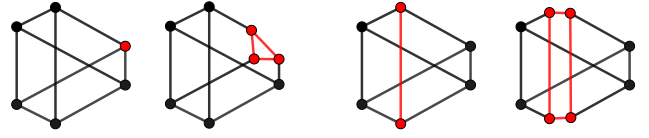

Blowup
The following figure illustrates the effect of blowups along a GKM subgraph (red) on the underlying graph.

Blowups of smooth and Orbifold GKM graphs
Oscar.IntersectionTheory.blowup — Function
blowup(S::AbstractGKMSubgraph)
blowup(S::AbstractGKMSubgraph, weights::AbstractVector{<:Integer})Given a GKMSubgraph or OrbifoldGKMSubgraph structure S, return the blow up along S. An ordinary blowup of a smooth graph returns a GKMSubgraph; weighted blowups and blowups of orbifold graphs return an OrbifoldGKMSubgraph. The subgraph of the result is the exceptional divisor.
Examples of smooth blowups
julia> G = projective_space(GKMGraph, 3) # 3-dimensional projective space
GKM graph with 4 nodes, valency 3 and axial function:
2 -> 1 => (1, -1, 0, 0)
3 -> 1 => (1, 0, -1, 0)
3 -> 2 => (0, 1, -1, 0)
4 -> 1 => (1, 0, 0, -1)
4 -> 2 => (0, 1, 0, -1)
4 -> 3 => (0, 0, 1, -1)
Birkhoff-Grothendieck connection for GKM graph with 4 nodes and valency 3
julia> S = subgraph_from_vertices(G, [1, 2]) # we take the subgraph of two vertices, it corresponds to a line
GKM subgraph of:
GKM graph with 4 nodes, valency 3 and axial function:
2 -> 1 => (1, -1, 0, 0)
3 -> 1 => (1, 0, -1, 0)
3 -> 2 => (0, 1, -1, 0)
4 -> 1 => (1, 0, 0, -1)
4 -> 2 => (0, 1, 0, -1)
4 -> 3 => (0, 0, 1, -1)
Birkhoff-Grothendieck connection for GKM graph with 4 nodes and valency 3
Subgraph:
GKM graph with 2 nodes, valency 1 and axial function:
2 -> 1 => (1, -1, 0, 0)
Algorithmic connection for GKM graph with 2 nodes and valency 1
julia> blowupSub = blowup(S) # blowup of P3 along the line S
GKM subgraph of:
GKM graph with 6 nodes, valency 3 and axial function:
[1>4] -> [1>3] => (0, 0, 1, -1)
[2>3] -> [1>3] => (1, -1, 0, 0)
[2>4] -> [1>4] => (1, -1, 0, 0)
[2>4] -> [2>3] => (0, 0, 1, -1)
3 -> [1>3] => (1, 0, -1, 0)
3 -> [2>3] => (0, 1, -1, 0)
4 -> [1>4] => (1, 0, 0, -1)
4 -> [2>4] => (0, 1, 0, -1)
4 -> 3 => (0, 0, 1, -1)
Algorithmic connection for GKM graph with 6 nodes and valency 3
Subgraph:
GKM graph with 4 nodes, valency 2 and axial function:
[1>4] -> [1>3] => (0, 0, 1, -1)
[2>3] -> [1>3] => (1, -1, 0, 0)
[2>4] -> [1>4] => (1, -1, 0, 0)
[2>4] -> [2>3] => (0, 0, 1, -1)
Algorithmic connection for GKM graph with 4 nodes and valency 2
julia> Spoint = subgraph_from_vertices(G, [1]) # we take the subgraph of one vertex that is an invariant point
GKM subgraph of:
GKM graph with 4 nodes, valency 3 and axial function:
2 -> 1 => (1, -1, 0, 0)
3 -> 1 => (1, 0, -1, 0)
3 -> 2 => (0, 1, -1, 0)
4 -> 1 => (1, 0, 0, -1)
4 -> 2 => (0, 1, 0, -1)
4 -> 3 => (0, 0, 1, -1)
Birkhoff-Grothendieck connection for GKM graph with 4 nodes and valency 3
Subgraph:
GKM graph with 1 nodes, valency 0 and axial function:
Empty connection for GKM graph with 1 nodes and valency 0
julia> blowupPt = blowup(Spoint) # blowup of P3 at a point
GKM subgraph of:
GKM graph with 6 nodes, valency 3 and axial function:
[1>3] -> [1>2] => (0, 1, -1, 0)
[1>4] -> [1>2] => (0, 1, 0, -1)
[1>4] -> [1>3] => (0, 0, 1, -1)
2 -> [1>2] => (1, -1, 0, 0)
3 -> [1>3] => (1, 0, -1, 0)
3 -> 2 => (0, 1, -1, 0)
4 -> [1>4] => (1, 0, 0, -1)
4 -> 2 => (0, 1, 0, -1)
4 -> 3 => (0, 0, 1, -1)
Algorithmic connection for GKM graph with 6 nodes and valency 3
Subgraph:
GKM graph with 3 nodes, valency 2 and axial function:
[1>3] -> [1>2] => (0, 1, -1, 0)
[1>4] -> [1>2] => (0, 1, 0, -1)
[1>4] -> [1>3] => (0, 0, 1, -1)
Algorithmic connection for GKM graph with 3 nodes and valency 2
julia> ambient_blowupSub = ambient_graph(blowupSub);
julia> c3_Sub = chern_class(ambient_blowupSub, 3);
julia> integrate(c3_Sub) # we expect this to be 6
6
julia> ambient_blowupPt = ambient_graph(blowupPt);
julia> c3_Pt = chern_class(ambient_blowupPt, 3);
julia> integrate(c3_Pt) # we expect this to be 6
6We can blowup also Orbifold GKM graphs.
GKMtools.weighted_blowup — Function
weighted_blowup(S::AbstractGKMSubgraph, weights::AbstractVector{<:Integer}) -> OrbifoldGKMSubgraphSee blowup.
An example of a blowup of an orbifold.
julia> W = stacky_weighted_projective_space_fan([1, 2, 3, 4]);
julia> Wp = gkm_graph_of_orbifold_toric(W);
julia> s = subgraph_from_vertices(Wp, [1]);
julia> GKMtools.blowup(s)
GKM subgraph of:
Orbifold GKM graph with 6 nodes, valency 3 and axial function:
[1>3] -> [1>4] => (1, -1, 0, 1)
[1>2] -> [1>4] => (1, 0, -1, 2)
[1>2] -> [1>3] => (0, 1, -1, 1)
2 -> [1>2] => (0, 0, -1, 4)
3 -> [1>3] => (0, -1, 0, 3)
3 -> 2 => (0, -4, 3, 0)
4 -> [1>4] => (-1, 0, 0, 2)
4 -> 2 => (-2, 0, 1, 0)
4 -> 3 => (-3, 2, 0, 0)
Vertex Isotropy:
2 => Orbifold Vertex Isotropy, Group Structure (cyclic factors): [4]
Tangent Representation:
[1 3 2]
3 => Orbifold Vertex Isotropy, Group Structure (cyclic factors): [3]
Tangent Representation:
[1 1 2]
4 => Orbifold Vertex Isotropy, Group Structure (cyclic factors): [2]
Tangent Representation:
[1 0 1]
Flag Isotropy:
2.3 => Orbifold Flag Isotropy, Group Structure (cyclic factors): [2]
Embedding Matrix:
[2]
4.2 => Orbifold Flag Isotropy, Group Structure (cyclic factors): [2]
Embedding Matrix:
[1]
Algorithmic connection for GKM graph with 6 nodes and valency 3
Subgraph:
Orbifold GKM graph with 3 nodes, valency 2 and axial function:
[1>3] -> [1>4] => (1, -1, 0, 1)
[1>2] -> [1>4] => (1, 0, -1, 2)
[1>2] -> [1>3] => (0, 1, -1, 1)
Vertex Isotropy:
Flag Isotropy:
Algorithmic connection for GKM graph with 3 nodes and valency 2Weighted blowups
We construct the weighted blowup of the affine space $\mathbb{A}^4$ with weights weights = [1, 2, 3, 4]. We show that the result has exceptional divisor isomorphic to the weighted projective space $\mathbb{P}^3(1, 2, 3, 4)$.
julia> A4_toric = affine_space(NormalToricVariety, 4);
julia> A4_GKM = gkm_graph_of_toric(A4_toric);
julia> sub_A4 = subgraph_from_vertices(A4_GKM, [1]);
julia> blow_A4 = GKMtools.blowup(sub_A4, [1, 2, 3, 4]);
julia> subgraph(blow_A4)
Orbifold GKM graph with 4 nodes, valency 3 and axial function:
[1>F2] -> [1>F1] => (2, -1, 0, 0)
[1>F3] -> [1>F1] => (3, 0, -1, 0)
[1>F3] -> [1>F2] => (0, 3, -2, 0)
[1>F4] -> [1>F1] => (4, 0, 0, -1)
[1>F4] -> [1>F2] => (0, 2, 0, -1)
[1>F4] -> [1>F3] => (0, 0, 4, -3)
Vertex Isotropy:
[1>F2] => Orbifold Vertex Isotropy, Group Structure (cyclic factors): [2]
Tangent Representation:
[1 1 0]
[1>F3] => Orbifold Vertex Isotropy, Group Structure (cyclic factors): [3]
Tangent Representation:
[1 2 1]
[1>F4] => Orbifold Vertex Isotropy, Group Structure (cyclic factors): [4]
Tangent Representation:
[1 2 3]
Flag Isotropy:
[1>F2].3 => Orbifold Flag Isotropy, Group Structure (cyclic factors): [2]
Embedding Matrix:
[1]
[1>F4].2 => Orbifold Flag Isotropy, Group Structure (cyclic factors): [2]
Embedding Matrix:
[2]
Algorithmic connection for GKM graph with 4 nodes and valency 3Let us construct the weighted projective space $\mathbb{P}^3(1, 2, 3, 4)$.
julia> W = stacky_weighted_projective_space_fan([1, 2, 3, 4]);
julia> Wp = gkm_graph_of_orbifold_toric(W)
Orbifold GKM graph with 4 nodes, valency 3 and axial function:
2 -> 1 => (0, 0, -1, 4)
3 -> 1 => (0, -1, 0, 3)
3 -> 2 => (0, -4, 3, 0)
4 -> 1 => (-1, 0, 0, 2)
4 -> 2 => (-2, 0, 1, 0)
4 -> 3 => (-3, 2, 0, 0)
Vertex Isotropy:
2 => Orbifold Vertex Isotropy, Group Structure (cyclic factors): [4]
Tangent Representation:
[2 3 1]
3 => Orbifold Vertex Isotropy, Group Structure (cyclic factors): [3]
Tangent Representation:
[2 1 1]
4 => Orbifold Vertex Isotropy, Group Structure (cyclic factors): [2]
Tangent Representation:
[1 0 1]
Flag Isotropy:
2.1 => Orbifold Flag Isotropy, Group Structure (cyclic factors): [2]
Embedding Matrix:
[2]
4.2 => Orbifold Flag Isotropy, Group Structure (cyclic factors): [2]
Embedding Matrix:
[1]
Algorithmic connection for GKM graph with 4 nodes and valency 3The two constructions coincides after reodering the vertices and flags: (1, 2, 3, 4) correspond to [1>F1], [1>F4], [1>F3], [1>F2].